绝影 · 蝉翼 XT11银灰细框架 · 暖橙背板 · 窄幅家电感 | 大跑 · C7-530S参考粗金属立柱 · 横向黑面板 · 直线力量感 | 迈宝赫 · DX01连续大C外壳 · 大面积镂空 · 厚重雕塑感 | 迈宝赫 · ST01双弧立柱 · 红黑/银黑双色 · 跑步与登山姿态 |
|---|---|---|---|
| 01 / 平放使用 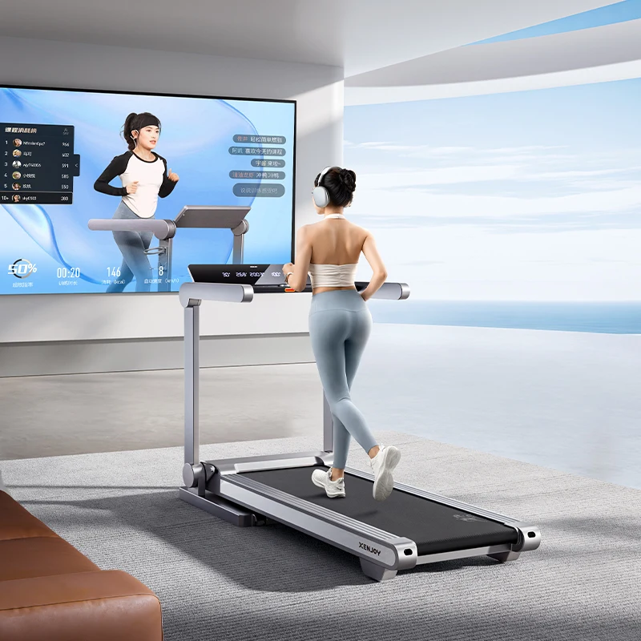 | 01 / 平放使用 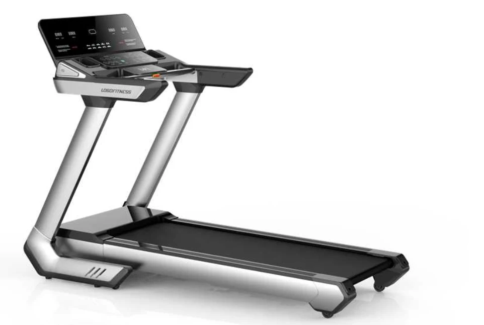 | 01 / 平放使用 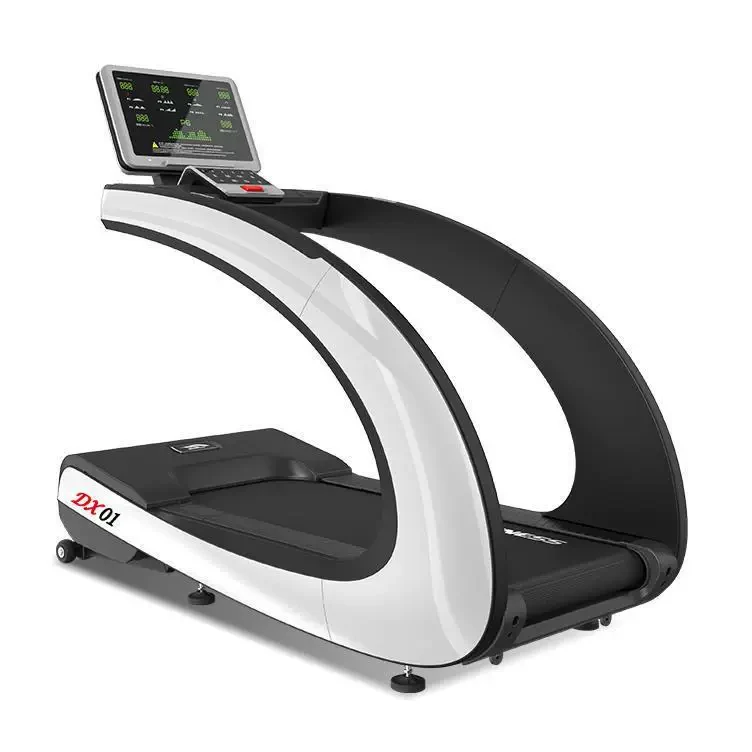 | 01 / 平放使用 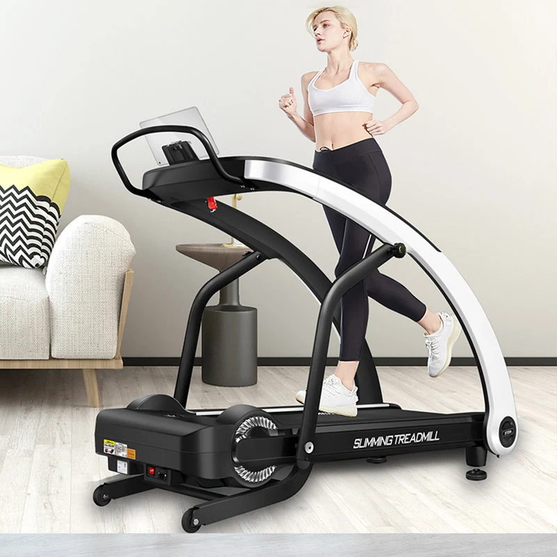 |
| 02 / 侧面与结构 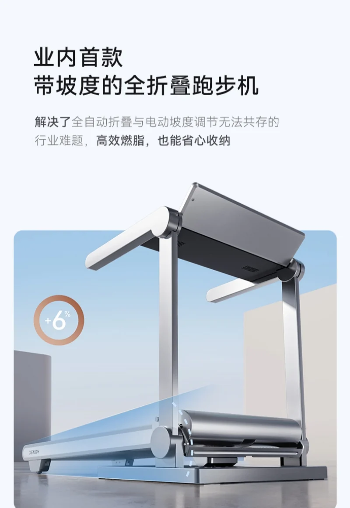 | 02 / 侧面与结构 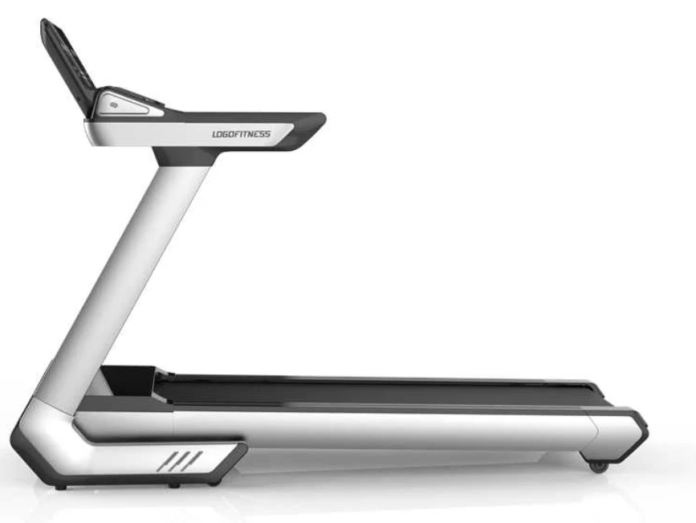 | 02 / 侧面与结构 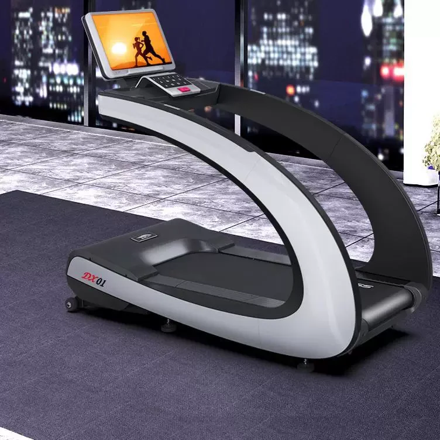 | 02 / 侧面与结构 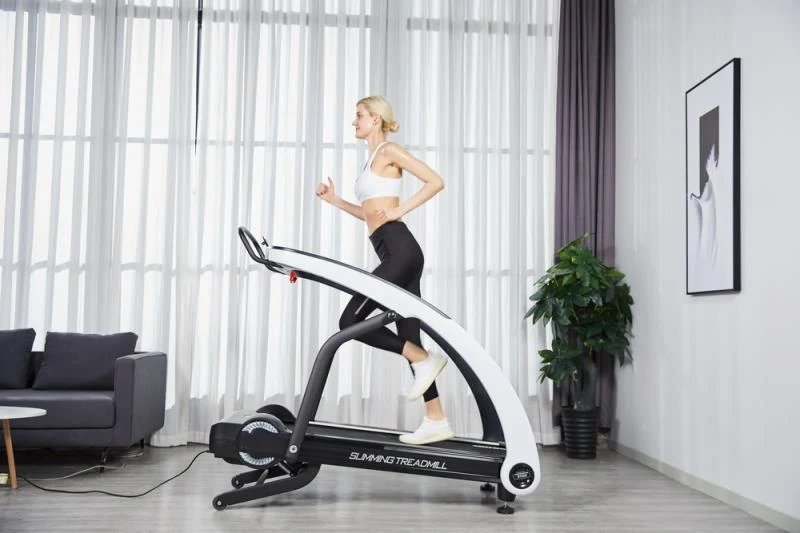 |
可折叠，支持自动竖向收纳 已找到官网竖放原图。跑台抬起后形成窄幅立面，背板与低位支脚成为收纳外观。 | 可折叠，原厂页面明确 Foldable: Yes 属于跑台后端上翻式收纳：立柱、面板保持站立，跑台斜立在两立柱之间，底座仍有进深。已找到对应原厂渲染图。 | 不可折叠，商品参数明确标为 Non 不提供折叠或竖放状态。它保留完整的大C侧框与底盘；搬运倾斜不能作为收纳功能。 | 可折叠，厂家给出折后1580×800×600 mm 竖放仍未核实。已找到平放原图与折叠尺寸，但未找到能明确展示同款折后竖放的图。厂家另一页出现1520×775×360 mm等冲突数据，未据此确认薄片竖放。 |
| 03 / 收纳状态 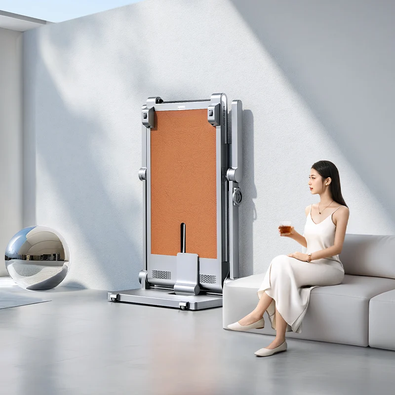 | 03 / 收纳状态 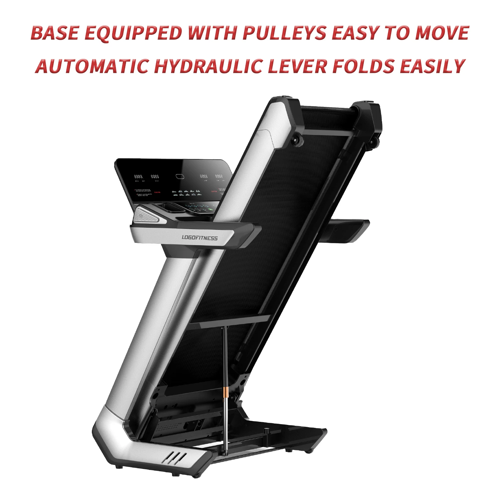 | 03 / 收纳状态 不适用 · 不可折叠 当前资料标为非折叠，保留平放造型。 | 03 / 收纳状态 竖放图尚未核实 厂家参数证实可折叠；未找到同款折后竖放原图。 |
04 / 外形要点与图源
| 04 / 外形要点与图源
查看补充原图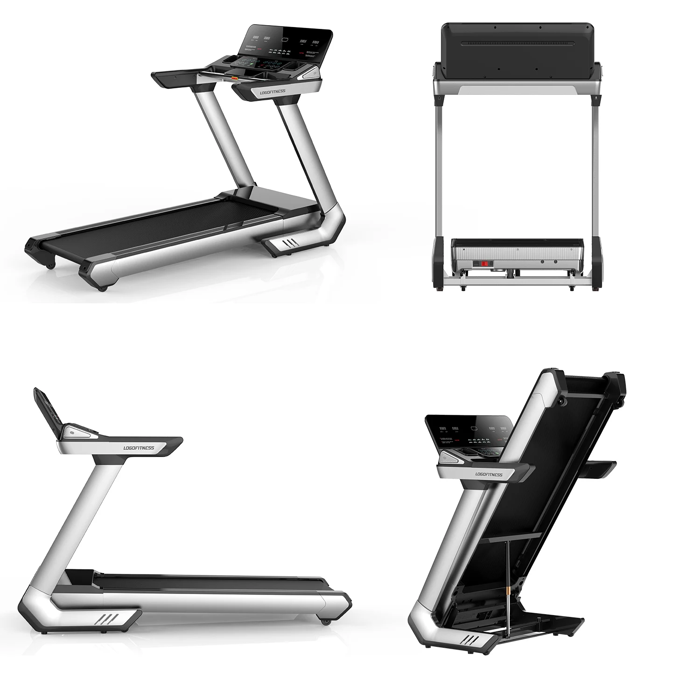 | 04 / 外形要点与图源
| 04 / 外形要点与图源
查看补充原图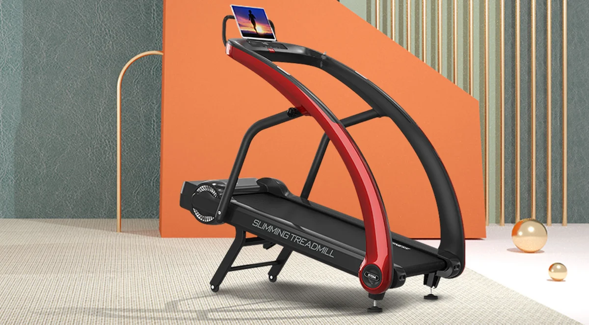 |